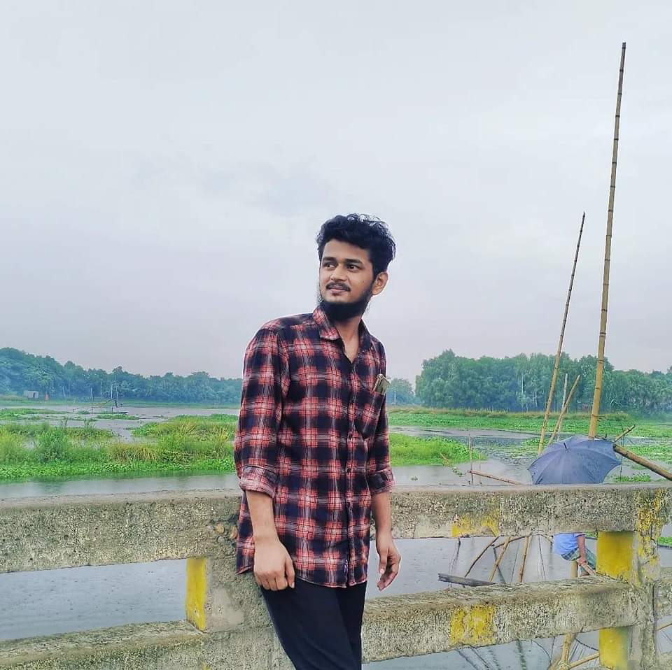
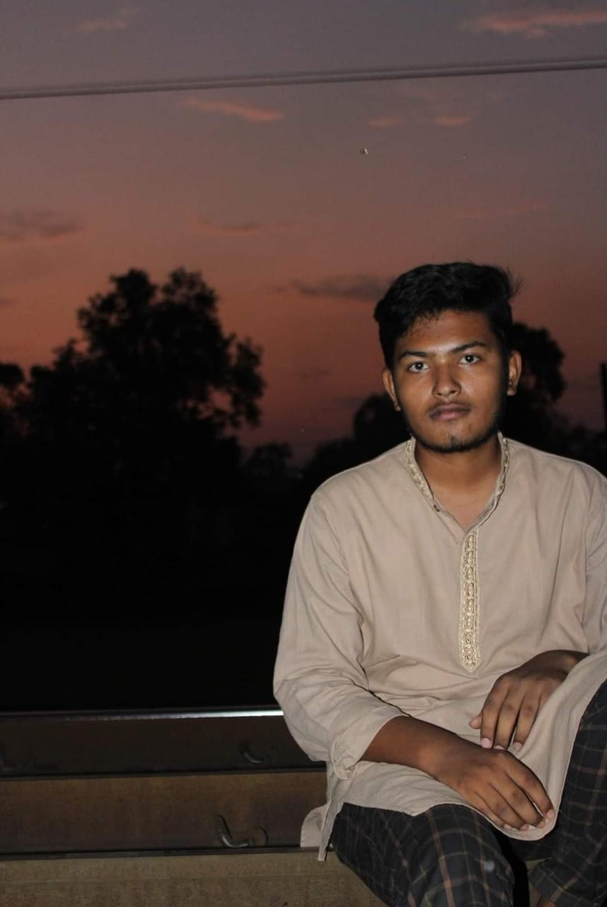
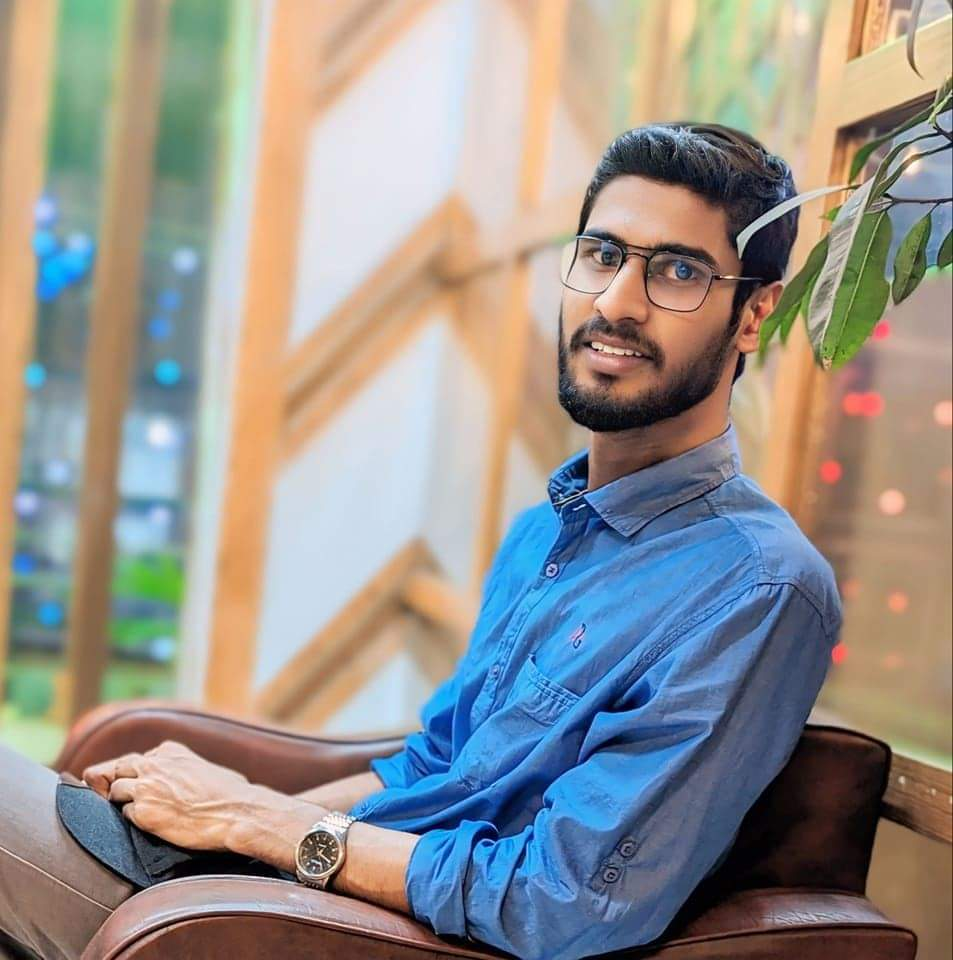
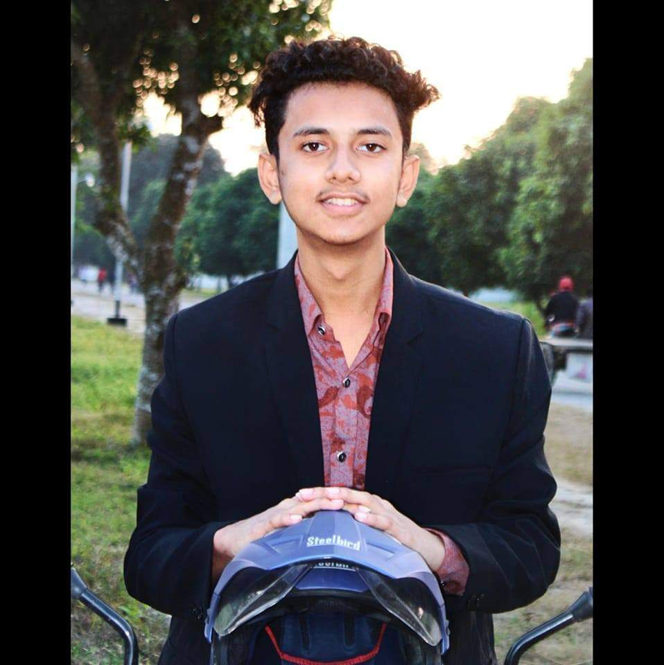
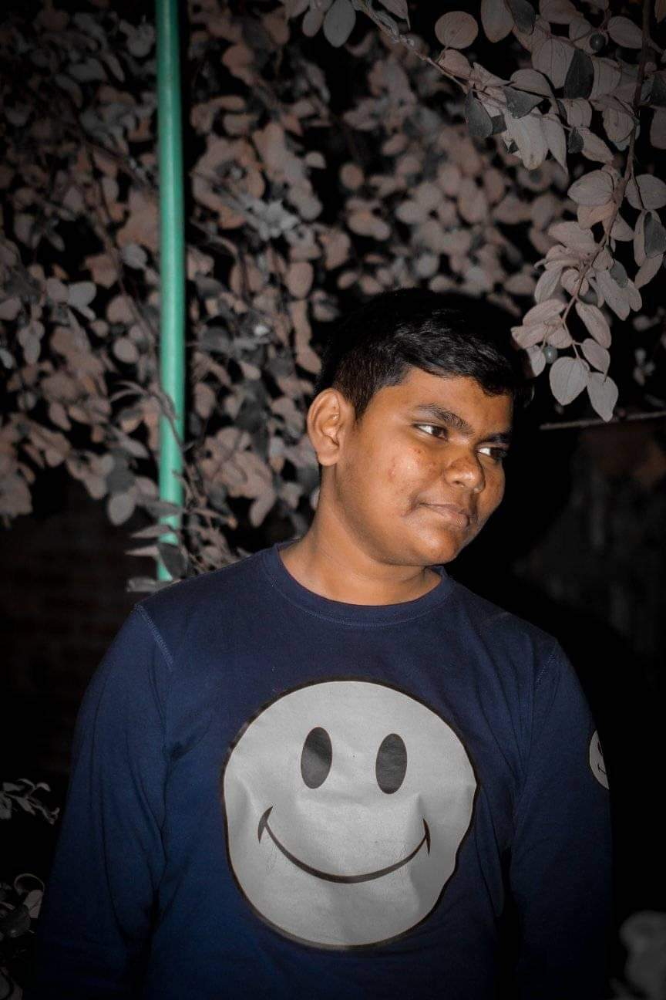

I have mentioned here my twice friend circle here.
My high school friends:
Anower Hossain Fahad, commonly known as Fahad.But we sometimes call him by "Fatu".He is now in Croatia. Though his health is suffering from fetal liver diseases, he is now thousands of miles away from us.May Allah keep him safe and happy.
Fardin Al Shafik, I used to spell his name by shafiq.And he was disappointed about this.We are doing Computer Science together in IUBAT.He holds good programming skills.He is planning to lose some weight nowadays.
Saiful-Lah-Al-Mahfuz, you may be wondering why his name is spelled like that. For your understanding it was a mistake done by our school. At the time of board exam registration, they did this to Saifullah. Saifullah is currenlty known as "Baki". He is studying Textile Engineering in South East University.He has improved of his lackings in English.The video resume was a blast.
Fahim Bhuiyan, the most interesting boy in our group.He has numerous quality in himself. He can sing, jokes and have a good humor.Besides he is good with girls.Bhuiyan used to be the shortest boy in our circle. Now it was a past talkings.Moreover he has some bad habits too.But he can handle any situation in with bearing the senses.He was kinda cute by the way.
Pradip Sarkar, he likes to call himself Antu. But we haven't call him by this name.He is the most polite person among us.He had been an extra good student before 10th standard. But now he always reminds that he is not more that person anymore by his actions.He is studying Vaterinery Sciece in Barishal. Hope he will do good in future.By the he is lot more skinny he used to be.
